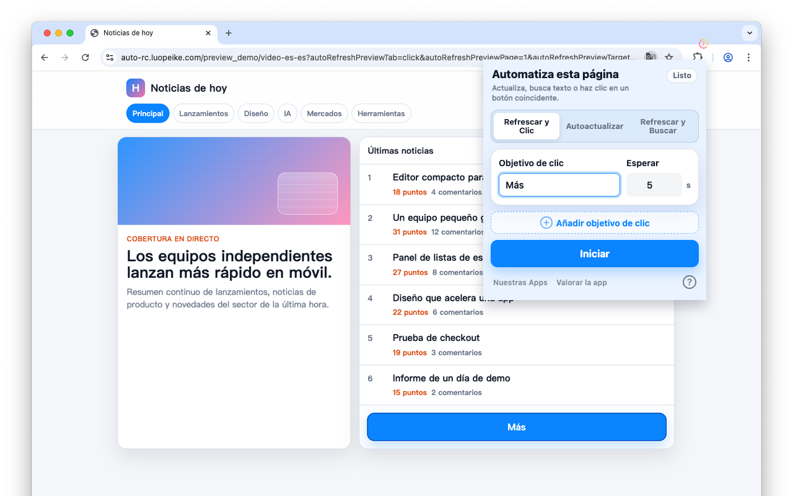

Actualizar páginas a intervalos personalizados
Define un intervalo y mantén al día las páginas importantes en el navegador.
Safari en iPhone, iPad y Mac · Chrome en ordenador
Actualiza páginas por intervalo, haz clic en botones coincidentes y encuentra cambios de texto.

Úsalo para entradas, inventario, precios, pedidos y paneles.
Define un intervalo y mantén al día las páginas importantes en el navegador.
Busca botones como Buy, Next, Submit o Reserve y haz clic automáticamente.
Útil para entradas, inventario, pedidos, precios y paneles.
La configuración se guarda en tu navegador. No necesitas una cuenta web.
• Chrome o Edge en iPhone y iPad no permiten instalar extensiones, necesitas usar Safari.
• Hay una versión para Safari de esta extensión. Busca "Auto Refresh & Clicker" en la App Store, o encuéntrala aquí Auto Refresh & Clicker, paga $2.99 para obtenerla, y podrás usarla en tus dispositivos iOS y macOS.
• Debido a las limitaciones del sistema iOS, las extensiones de Safari solo pueden ejecutarse por muy poco tiempo en segundo plano.
• Se recomienda ejecutarla en primer plano para obtener mejores resultados. Puedes configurar la pantalla de tu iPhone para que permanezca encendida mientras la extensión está abierta.
1. Introduce los intervalos de tiempo y las palabras clave;
2. Haz clic en "Start" (Iniciar);
3. Si quieres usar "Actualizar y Clic" con otros intervalos y palabras clave, haz clic en "Stop" (Detener), luego repite los pasos 1 y 2.
1. Introduce los intervalos de tiempo;
2. Haz clic en "Start" (Iniciar);
3. Si quieres usar "Auto Refresh" con otros intervalos, haz clic en "Stop" (Detener), luego repite los pasos 1 y 2.
1. Introduce los intervalos de tiempo y las palabras clave;
2. Haz clic en "Start" (Iniciar);
3. Si quieres usar "Refresh & Find" con otros intervalos y palabras clave, haz clic en "Stop" (Detener), luego repite los pasos 1 y 2.